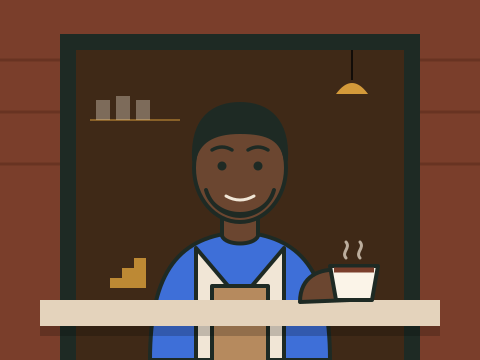

Desmond Clarke
Co-owner, coffee
Desmond spent eleven years roasting for wholesale outfits in Red Hook and Bushwick, dialing in blends for cafés he never got to stand behind. Born in Crown Heights to Jamaican parents, he moved to Halsey Street in 2016 and noticed the block had a dozen stoops and nowhere to get a decent cup within six minutes.
He pulls every shot of the morning rush himself and still cups each new batch of Brownstone before it goes in the hopper.